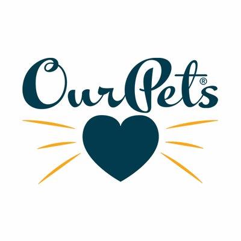
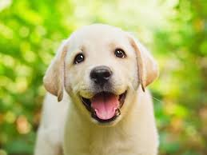
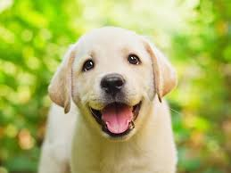

Founder Profile
Dr. Steve Tsengas (Dr. Steve) has had a keen interest in a holistic, integrated approach to health for more than 35 years. His interest in holistic health, combined with his love of pets, led him to pursue a Ph.D. in Natural Health & Nutrition and become a member of the American Naturopathic Medical Association. In-depth areas of interest include cat and dog biological behavior and geriatric pathologies such as periodontal disease, cardiovascular disease, skin and coat problems and cognitive health and nutrition. He has effectively applied his knowledge and interest in developing pet accessories and consumable products for improving the health, safety, comfort and enjoyment of pets. His unique and innovative pet products have been issued dozens of patents. He received his BS Engineering degree from the State University of New York at Buffalo, his MS Business Degree (minor in Behavioral Sciences) from the University of Rochester, W. Simon Graduate School of Business and his Ph.D. from Clayton College of Natural Health. Read more about Dr. Steve. OurPet's, Our Commitment...
Since founding The OurPet’s Company in 1995, we have dedicated extensive amounts of time to the understanding of pets’ critical link to nature. Along with proper nutrition, mental stimulation, physical exercise and veterinary care, The OurPet’s Company products help to maintain your pet’s health and wellness.Our Beginning... The OurPet’s Company began with the development of the elevated Big Dog Feeder. This product has brought the importance of ergonomically correct eating positions to the public, and the family of Healthy Pet Diners™ and Store-N-Feed™ Diners continues to be among the market’s leading products. They improve posture and comfort and minimize stress and damage to joints and muscles.
Our Patented Products...
Since the beginning, our goal has not changed – to develop and market high quality, innovative products for improving the health, safety, comfort and enjoyment of pets. We strive to develop truly unique and innovative products – in fact, almost all of our products are patented and are the only ones of their kind in the marketplace. This unique product design process begins by looking at the health, behavioral and lifestyle needs of pets and owners. By finding original ways to fill these needs, we offer problem-solving solutions to pet owners – and highly marketable products to retailers. In addition, OurPet’s products have won numerous industry awards.Our Two-Brand Solution…
The OurPet’s Company recognizes the unique needs of our trade customers in both the pet specialty and food/drug/mass-market channels. That’s why we offer two unique brands to fulfill the needs of our diverse yet equally important customers. The OurPets brand caters to our pet specialty customers and consumers, while the Pet Zone brand focuses on the needs of the food/drug/mass market channel and shoppers.Our Market Leadership...
We have become leaders in Healthy Feeding Systems to improve the health and comfort of your pet, Interactive Toys that provide fun, rewarding mental and physical challenges, and Feline and Canine Waste Management to simplify the required maintenance needs of pets. Our customers and retailers look to us to provide the most innovative products for their pets, and we will continue to introduce these leading products to the marketplace.
 
